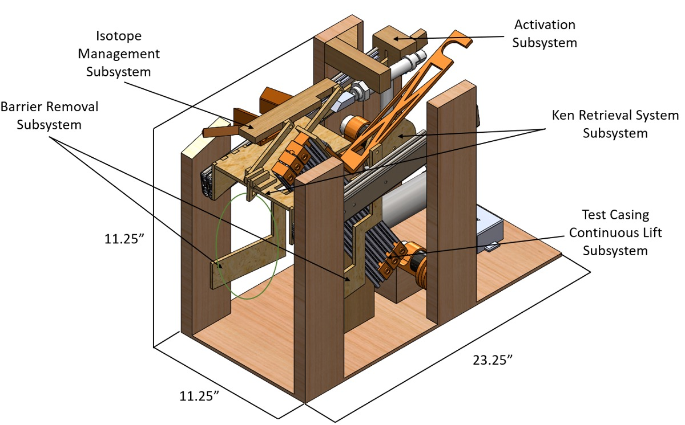
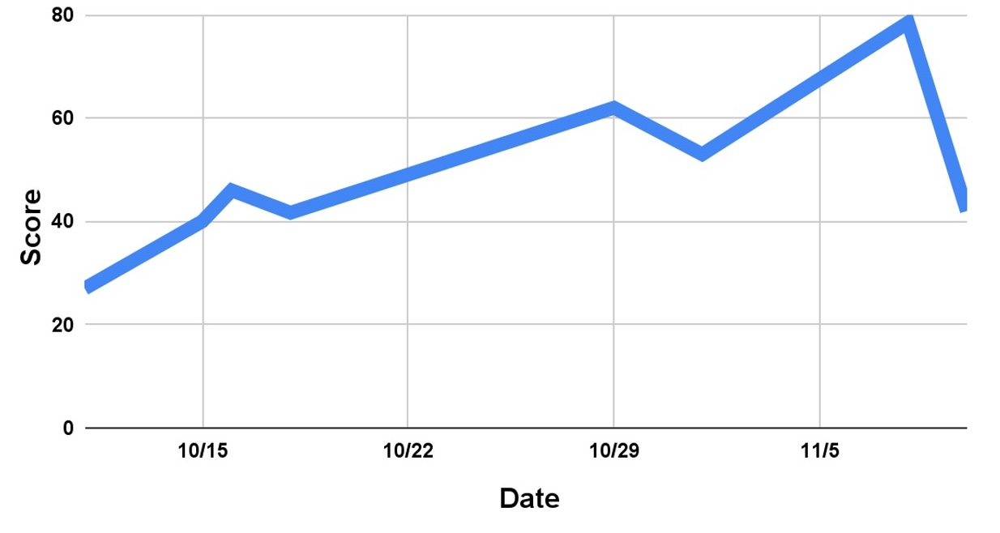

The ME 2110 Barbenheimer competition challenged teams of four to design, build, and test a fully autonomous robot that could complete a series of tasks on an arena: knocking over barriers, rescuing a Ken doll, collecting and sorting isotopes, and placing a test casing on a 54" tall test rig. My team built a stationary robot with five independently deploying mechanisms that all cascaded in sequence from a single activation event. In final testing the robot consistently scored around 80 points, with all subsystems functioning reliably. In the final competition however, the robot scored an average of 42 points due to unexpected challenges with pulley string tangling.
The primary challenge of this competition was that the robot had to start contained in a 12"x24"x18" box and only use two motors, four input and four output ports, and a strict budget of $100. The size constraint was the main design challenge and consistency was identified as an important requirement. Fitting five distinct mechanical tasks into a tightly constrained hardware and size budget was the central design challenge. Consistency was identified early as the most critical requirement — a high task failure rate would cost more points than attempting fewer tasks reliably. The two hardest tasks were isotope sorting, where an external rotating force frequently destabilized the robot, and string management, as the design relied heavily on tension and gravity, leaving many strings at risk of tangling or catching on other components under competition pressure.
The final design was a stationary base measuring 11.25"x23.25"x17.25" with five deploying mechanisms that activate in a timed cascade. First, a pneumatic actuator drives a four-bar linkage outward, activating the robot for 27 points and deploying the isotope redirection system onto the calutron. Next, a second pneumatic actuator releases the drawer slides, which extend 27 inches while rubber-tensioned barrier arms swing outward to knock the side fences. At full extension, a string-triggered lasso hook drops a nylon lasso onto Ken, and a DC motor pulls him back into the robot. Simultaneously, a second DC motor drives a 3D-printed spool wound with fishing line, lifting a platform along four 400 mm T-slot aluminum extrusions to 53 inches. A mousetrap arm at the top — triggered by string tension and supported by a solenoid for reliability triggers to place the test casing on the rig. Fabrication used a combination of MDF laser cutting, 3D-printed PLA components, waterjet aluminum interfaces, and hand-cut wood framing.
Over the design process, the robot consistenly scored more and more points, as shown in the figure on the left. Although the robot scored around 80 points consistently in the days before competition, it only scored and In the days before competition, the robot consistently scored around 80 points with all subsystems functioning reliably. In the final competition the robot scored 36, 43, and 47 points across the three rounds. Activation and all three barrier knockdowns succeeded every round. The lift system, which was our highest point scoring subsystem, experienced early mousetrap triggering in rounds one and two due to string entanglement, and in round three the casing reached the top but bounced off the rig rather than attaching due to the casing magnet placement. Future improvements would prioritize guided string channels to eliminate tangling, a redesigned isotope system, and testing protocols that fully replicate competition setup conditions.

